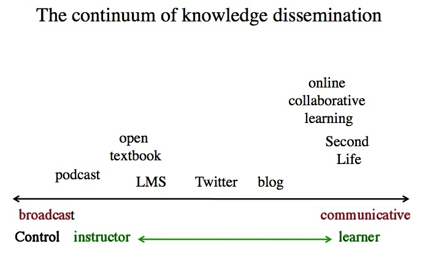

A partir da lista abaixo:
1. Determine qual constitui uma mídia e qual é uma tecnologia, ou qual poderia assumir ambas as funções e sob quais condições.
| Sistema de gestão de aprendizagem (LMS) | Ambos: tecnologia como software, mídia quando empregue na distribuição do curso. |
| Blog | Mídia (a tecnologia é o software do blog, como o WordPress). |
| Aprendizagem colaborativa on-line | Mídia. |
| Ambos, mas prioritariamente uma mídia. | |
| Mundos virtuais | Mídia. |
| Podcast | Mídia. |
| Livro didático aberto | Mídia. |
2. Identifique onde, com base na sua experiência, cada mídia ou tecnologia deveria ser posicionada na Figura 7.5 (correspondente à Figura 6.4.3). Justifique a sua escolha.

Apresentaram dificuldades:
Em ambas as situações, atribuí maior relevância à dimensão transmissiva/comunicativa face à dimensão de controle.
4. Qual a utilidade desta análise?
Compreender a posição que as diferentes mídias assumem na escala transmissiva/comunicativa auxilia na escolha de recursos letivos segundo a postura epistemológica do docente. Caso pretenda promover a participação ativa e a interação dos alunos, priorizarei mídias comunicativas. Caso o foco resida na transmissão de informações e na sua compreensão de base, recorrerei a mídias transmissivas. Na maioria dos cenários letivos, justifica-se articular ambas as dimensões. Mapear o posicionamento de cada recurso nesta escala constitui uma premissa útil para a tomada de decisões pedagógicas.